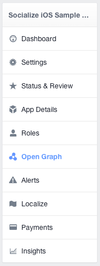
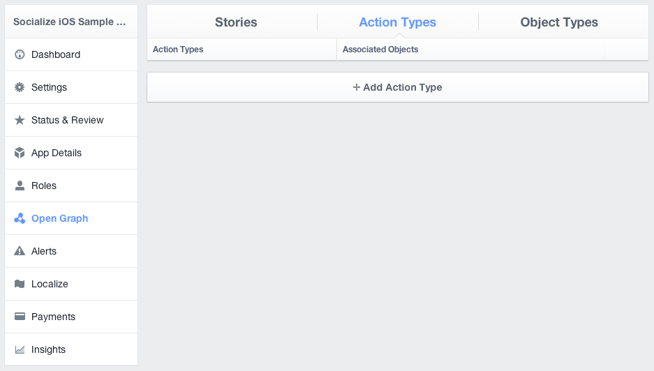
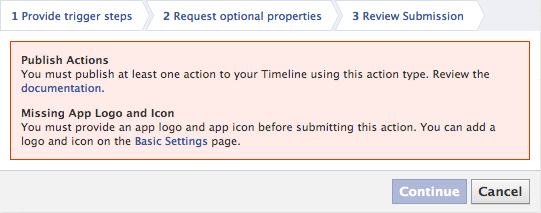
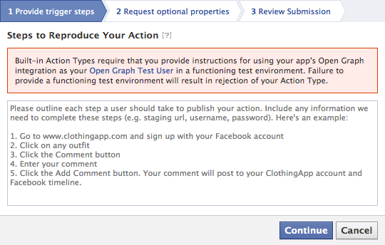

Using Facebook Open Graph¶
From v2.3 onwards Socialize supports Facebook “like” Open Graph actions. This means that when a user executes a “like” on Socialize and elects to share this on Facebook it can be posted as an “Open Graph Like” in the user’s Facebook Activity stream.
This behavior can be enabled programatically as follows
//import the socialize header
#import <Socialize/Socialize.h>
#pragma mark
- (BOOL)application:(UIApplication*)application didFinishLaunchingWithOptions:(NSDictionary*)launchOptions {
[Socialize storeOGLikeEnabled:YES];
//your application specific code
return YES;
}
Note
If you are not already familiar with the Facebook Open Graph we recommend reviewing the Facebook Documentation first
Configuring your Facebook App for Open Graph¶
Before you are able to utilize Open Graph calls such as “like” you must first follow the Facebook Guidelines for approval of Open Graph actions.
This is detailed on the Facebook website here:
The following steps apply to seeking approval for the in-built “like” action however the same approach can be followed for all Open Graph Actions.
Adding an Open Graph Action to your App¶
In your app settings on Facebook, access the Open Graph section:
You will be presented with the default configuration screen for Open Graph. Click the Create New Action Type button and select the action to be added
You will then be presented with a dialog in which your action can be selected. Choose an appropriate action and click Submit

Once your action has been added you are ready to submit it for approval. Click the Submit link.

At this point you may encounter some validation errors. The most common of which are:
The Publish Action requirement is most easily satisfied by simply executing the same curl command provided by Facebook.
Click on the Get Code link next to your action and run the curl command you are provided from your terminal (command line) interface

The final step in the approval process requires you to clarify with Facebook the exact purpose for your OG action.
Socialize has prepared a standard response for you to use in this situation. If you are using the Socialize UI features “out-of-the-box” (that is, without modification) then you can simply refer to the content we have provided for you at:
http://blog.getsocialize.com/facebook-open-graph-review
If you have implemented your own UI and/or are calling the Socialize SDK directly through any other means we recommend you follow the guidelines established by Facebook for the approval of Open Graph actions.
Using In Built Open Graph Actions¶
The in built OG actions provided by Facebook require approval by Facebook and there is a limited set of actions available and a corresponding limited set of object types.
The actions supported and the corresponding object types are as follows
| Action | Path | Object Types | Parameter |
|---|---|---|---|
| like | me/og.likes | object | object |
| follow | me/og.follows | profile | profile |
| publish | me/news.publishes | article | article |
| read | me/news.reads | article | article |
| watch | me/video.watches | video.movie | movie |
| video.episode | movie | ||
| video.tv_show | movie | ||
| video.other | movie |
The Object Types specified in the Open Graph call MUST correspond to a valid og:type meta element in the HTML page that represents the object.
For example:
<meta property="og:type" content="video.movie" />
Fortunately Socialize will automatically generate OG tags on your entity page, but you must specify the correct type on the entity object itself.
- (void)createEntityWithType {
SZEntity *entity = [SZEntity entityWithKey:@"http://myentity.com" name:@"My Name"];
// MUST be a valid OG type
[entity setType:@"video.movie"];
}
Once you have setup your Entity with the correct type you can force an Open Graph post by changing the PostData in the SocialNetworkListener. Here’s a complete example
The corresponding entity page on Socialize will automatically populate the required OG meta tags:
<meta property="og:title" content="My Entity Name" />
<meta property="og:description" content="...parsed from your URL..." />
<meta property="og:image" content="...parsed from your URL..." />
<meta property="og:type" content="video.movie" />
<meta property="og:url" content="...the URL of this page..." />
If you don’t have an actual URL for your entity you can setup the correct description, image etc by changing the meta data on your entity.
Refer to Entities Without URLs for more details on customizing the entity page.
Using Custom Open Graph Actions¶
In addition to using the built-in Open Graph actions, you can also define your own.
For example an app that reviews restaurants may want to post the fact that a user “ate” a “meal” rather than simply saying a user “shared” a “link”.
There is however a fairly lengthy setup process to correctly configure your application to handle custom OG actions.
We recommend reviewing the Open Graph Tutorial to understand how to configure your app for custom Open Graph actions.
Configuring Custom Open Graph Actions¶
Facebook Open Graph implements several security systems to ensure that owners of content are verified. One such security measure ensures that websites housing information about custom OG types are registered against the Facebook App to guarantee that 3rd party users cannot fraudulently represent custom types on external pages.
If you want to utilize custom open graph actions in your Socialize enabled app you must first configure your Facebook application to expect posts that refer to websites hosted by Socialize.
This consists of 3 simple steps:
- Obtain your Socialize App Url from your dashboard at www.getsocialize.com
- Nominate the Socialize App Url as your “Site URL” on Facebook
- Add the getsocialize.com domain to your list of App Domains on Facebook.

You can obtain your Socialize App Url from the “SmartDownloads” section accessed from your dashboard at www.getsocialize.com

Once you have configured your application to accept custom Open Graph actions you can post these actions to Facebook by changing the PostData in the SocialNetworkListener.